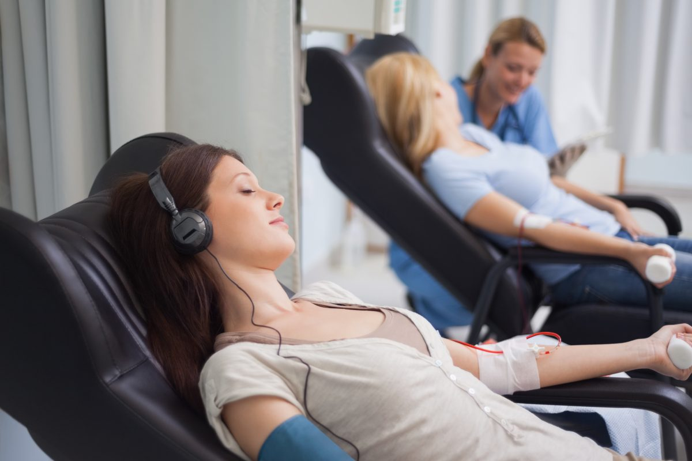

Learn About Donation
Want to learn more about blood, Blood need and blood donation? Check out these facts below to help you met your curiosity and to understand just why your donation is so important to people in our community.

BLOOD DONATION: HOW IT WORKS

BEFORE YOUR APPOINTMENT:
- Always be sure to drink plenty of water before donating blood!
- Eat an iron-rich meal. Eating enough iron is essential to ensuring that your hemoglobin level is right for donating.
- Bring your donor ID. If you have a donor ID, be sure to bring it with you to your appointment. First-time donors or returning donors without a donor ID card should bring a valid state-issued photo identification.
- Avoid alcohol and fatty foods for 24 hours, and aspirin (if donating platelets) for 48 hours, before your donation.
THE DONATION PROCESS:
Congratulations, you made an appointment to donate blood and save lives! So what happens now? There are four basic steps to every blood donation:
- Registration
- Medical History
- Donation
- Rest & Refreshment


AFTER YOUR BLOOD DONATION:
- Always be sure to drink plenty of water to rehydrate.
- Sit down or lie down if you feel lightheaded or dizzy. Call our post-donation callback line at (650) 725-9968 if you feel unwell.
- Rest and replenish iron. We recommend you take an iron supplement and/or eat foods rich in iron combined with a source of vitamin C after your donation.
- Avoid alcoholic beverages and vigorous exercise for at least 24 hours after donating, and be sure to keep that bandage on for a few hours!